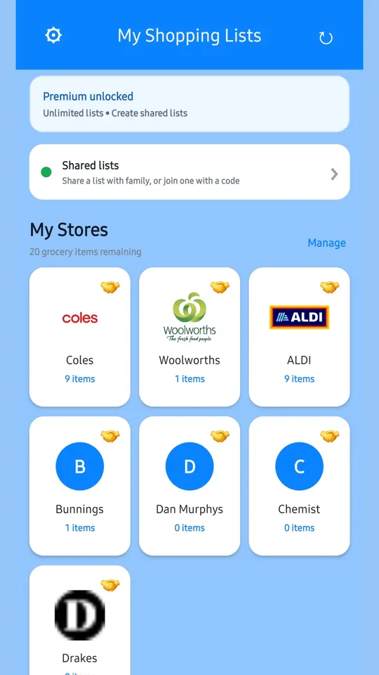
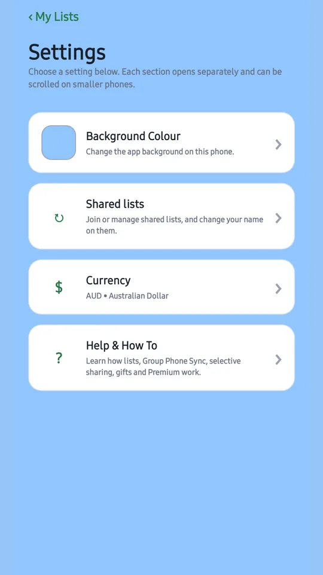
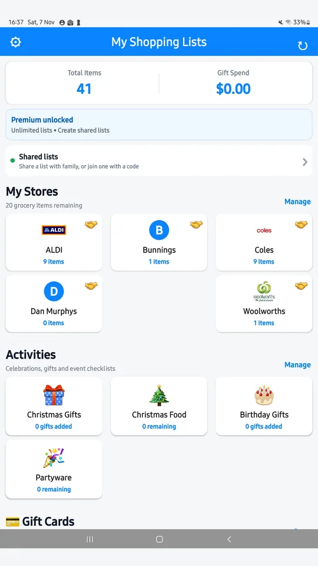
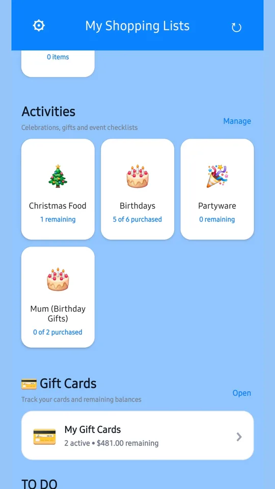
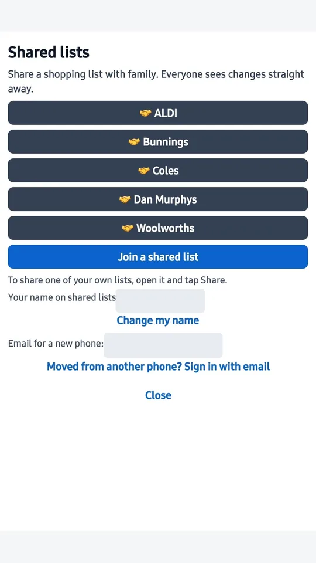
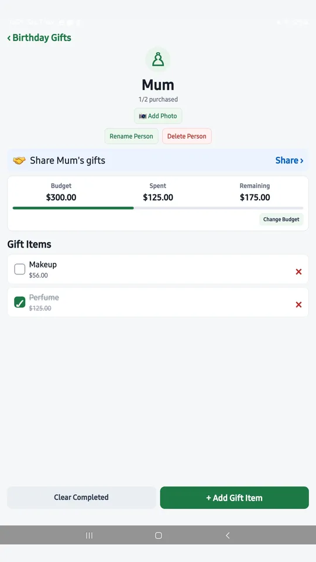

VERSION 2.2.5 · SHARED LISTS
Sharing & Phone Sync Guide
Share your lists with family so everyone sees changes straight away. This guide shows you how to create a list, share it, join someone else's list, keep it secure and move to a new phone.
Before you start: make sure every phone has the latest version of My Shopping Lists. Open the Google Play Store, check Manage apps & device → Updates available, and update the app if it's listed.
- How it works
- Create a list
- Share a list
- Join a list
- Using a shared list
- Managing sharing
- Changing phone
- Troubleshooting
1. How sharing works
- Sharing needs Premium. Joining is free. The person who shares a list (the owner) needs Premium. Family members who join need nothing: no Premium, no sign-up and no email.
- What you can share: a store list, an activity, a to-do list, one person's gifts from a Birthday or Christmas list, or a gift card.
- Invite codes: each shared list has an 8-number invite code. Only people who have the code can join.
- Live updates: everyone in the list can add and tick items, changes appear on everyone's phone, and each item shows who added it.
- Private by default: your own lists stay private unless you choose to share them.
- What doesn't sync: photos stay on the phone where they were added and are never uploaded. Budgets also stay on each phone.
- Spot shared lists: lists that are shared show a 🤝 handshake on their tile.


2. Create a list
- Open My Shopping Lists. You'll start on My Lists.
- Create the type of list you want:
- Store list: for a supermarket, hardware store, chemist or market.
- Activity: for celebrations, holidays and checklists, including Birthday and Christmas gift lists.
- To-do list: for home, work or projects.
- Give it a name and add your items.
- Optional: open Customise on a store tile to change its name, colour, icon or picture.
Free users can have up to 15 items per list. Premium removes this limit.


4. Join someone else's list (free)
- Ask the list owner for their 8-number invite code.
- Install or update My Shopping Lists from Google Play.
- Open the app and tap Shared lists near the top of My Lists (or ⚙ Settings → Shared lists).
- Tap Join a shared list.
- Type in the 8-number code.
- The shared list appears in your app, ready to use.
You don't need Premium, an account or an email address to join. Joining a list doesn't give you Premium for your own lists, and your existing lists stay as they are.

5. Using a shared list
- Add items: anyone in the list can add items, and they appear on everyone's phone.
- Tick items off: anyone can tick items as they shop, so the whole family can see what's already in the trolley.
- See who added what: each item shows who added it.
- Deleting items: you can delete items you added. If the owner set a group password, you need it to delete other people's items.
- Photos: photos you add stay on your phone only. Other members won't see them.
- Budgets: each phone keeps its own budget, so budget amounts can differ between phones.

6. Managing sharing (owners)
As the owner, you stay in control and can change these at any time:
- Make a new invite code: do this if a code has been passed on to someone it shouldn't have.
- Remove people: take someone out of a shared list.
- Stop sharing: turn sharing off for a list. Your own copy stays on your phone.
- Group password: set one so only people you trust can delete other people's items.
You'll find these options in the shared list's sharing settings.
7. Changing or replacing your phone
If you share your own lists
- On your old phone (before you switch): tap Shared lists → Add my email and follow the steps.
- On your new phone: install My Shopping Lists and sign in to Google Play with the same Google account you used to buy Premium.
- Tap Shared lists → Moved from another phone? Sign in with email. Your shared lists come back.
- Tap Restore Purchases to get Premium back. Don't buy Premium again.
If you only joined other people's lists
Just join again on your new phone with the invite code. Ask the owner to send it again if you need to.
Private lists and photos: lists you haven't shared, and all photos, are stored only on your phone. Use the app's password-protected backup in Backup & Recovery before changing phones, and don't uninstall the app or clear its data until you've checked your new phone.
8. Troubleshooting
I can't see the Share option
Sharing needs Premium and the latest app version. Update the app from Google Play. If you've bought Premium but it isn't showing, tap Restore Purchases using the Google account you bought it with.
"The app couldn't confirm my Premium purchase"
Check that you're signed in to Google Play with the account you used to buy Premium, tap Restore Purchases, then try sharing again. Please contact us before buying Premium again.
The invite code doesn't work
- Check that all 8 numbers are entered correctly.
- The owner may have made a new code. Ask them for the latest one.
- Make sure both phones have the latest version of the app.
Changes aren't showing on the other phone
- Check that both phones are connected to the internet.
- Close the list and open it again.
- Make sure both phones are updated to the latest version.
- Remember that photos and budgets never sync. They always stay on the phone where they were added.
I can't delete an item
If the list has a group password, you need it to delete items other people added. Ask the list owner.
Still stuck?
Email wilkoenterprises@outlook.com with your phone model, app version and what happened. Please don't email invite codes, group passwords or sign-in links.
See also: Support & Contact · Privacy Policy